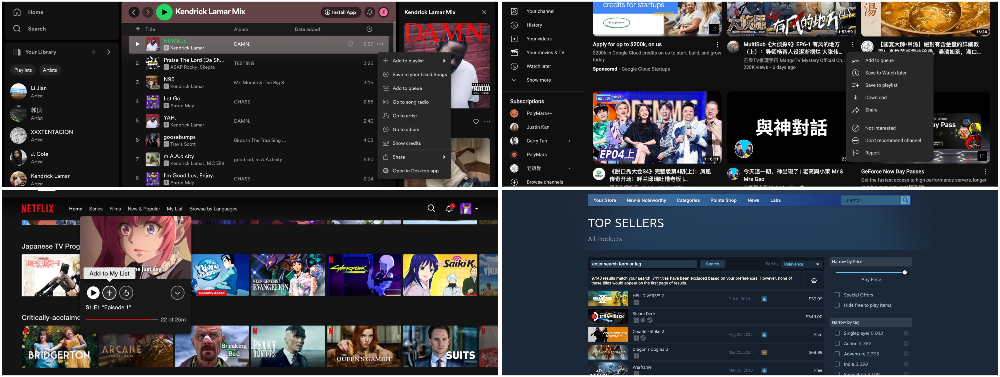
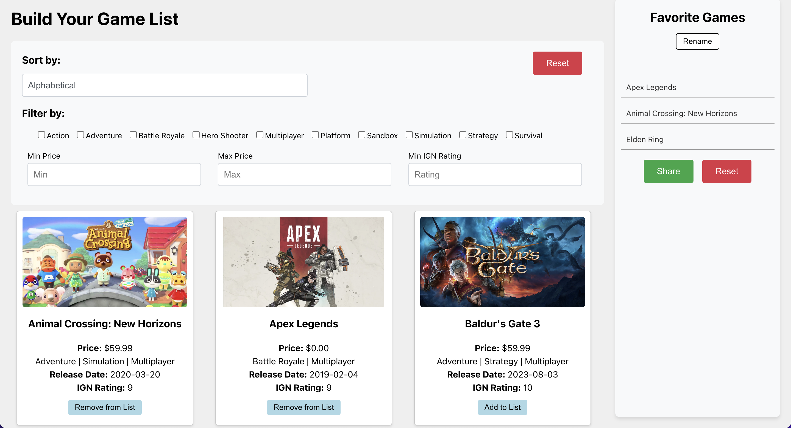

Games are my programming mentors and an important part of my life. I built this website so everyone can make a list of their favorite games and share it with others.
Why This Initiative
While there are platforms where we can share our tastes in music, videos, and more, game platforms like Steam primarily act as digital stores. They are too heavy for the simple task of sharing. I want to build a place for people to simply share and discuss our favorite games.

Research and Design
I started by analyzing other websites to learn what makes them effective. This helped me understand the essential features that make user interfaces engaging and easy to use.
I decided to include key features such as the ability to favorite games, sort lists by popularity or release date, and a share function to send game lists to friends.

Development
Based on my findings, I decided to use React to build a list-based interface that's simple yet powerful. All features were completed as planned.


Launch and Reflection
After completing the interface, I deployed the website using Vercel.
Through this React development project, I expanded my practical skills in building user interfaces using React library and gained experience on how to integrate more complex functionalities into the interface design.
For more details and to experience the site firsthand, visit it here.